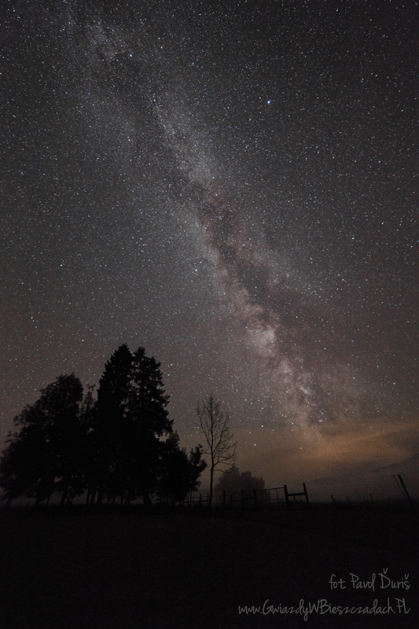
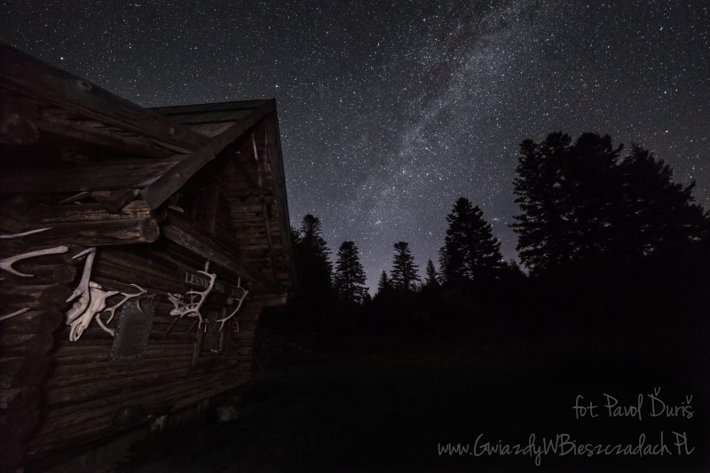

Park ciemnego nieba Bieszczady
Jedno z niewielu miejsc w Europie, Park Gwiezdnego Nieba Bieszczady. Utworzony w 2013 roku,
w celu ochrony nocnego nieba przed sztucznym światłem. Park nie posiada podstawy prawnej, a ochrona ciemnego
nieba wynika z dobrych intencji jego sygnatariuszy. Gminy na terenie parku ciemnego nieba po godzinie 21:00
wyłączają uliczne oświetlenie oraz ograniczają instalowanie na ich terenie nieodpowiednich (świecących częściowo
do góry) latarni oraz innych źródeł światła mogących wpłynąć na widok gwiezdnego nieba. W Bieszczadzkim Parku
Ciemnego Nieba, Droga Mleczna tworzy pas widoczny od jednej strony horyzontu do drugiej.
Gołym, nieuzbrojonym okiem w pogodną noc widoczne są tu tysiące gwiazd, a poziom ciemności SQM wynosi 21.95
mag./arc sec2 (gdzie 22 to poziom bez żadnego zanieczyszczenia sztucznym światłem).


Tajemnica gwiazdy betlejemskiej
Gwiazda Betlejemska - nazwa zjawiska na nieba, które według biblijnego opowiadania ukazało się trzem królom
jakoznak narodzenia Jezusa Chrystusa.Jednym z najbardziej prawdopodobnych scenariuszy tego zjawiska opisał
brytyjski astronom Mark Kidger, wedługniego w czasie gdy urodził się Chrystus,doszło do kilku niezwykłych i
rzadkich zjawisk astronomicznych. Pierwszym z nich była koniunkcja Jowisza orazSaturna w gwiazdozbiorze Ryb w 7
roku p.n.e.podobne wydarzenie zaobserwował w XVII wieku Johannes Kepler. Drugim taki wydarzeniem była koniunkcja
Jowisza,Saturna i Marsa w konstelacji Ryb w 6 roku p.n.e.Trzecim fenomenem był rzadki układ ciał niebieskich. Z
jednej strony koniunkcję stanowiły Księżyc i Jowisz, a zdrugiej Mars i Saturn. Czwartym niecodziennymzjawiskiem
był wybuch supernowej w 5 roku p.n.e.